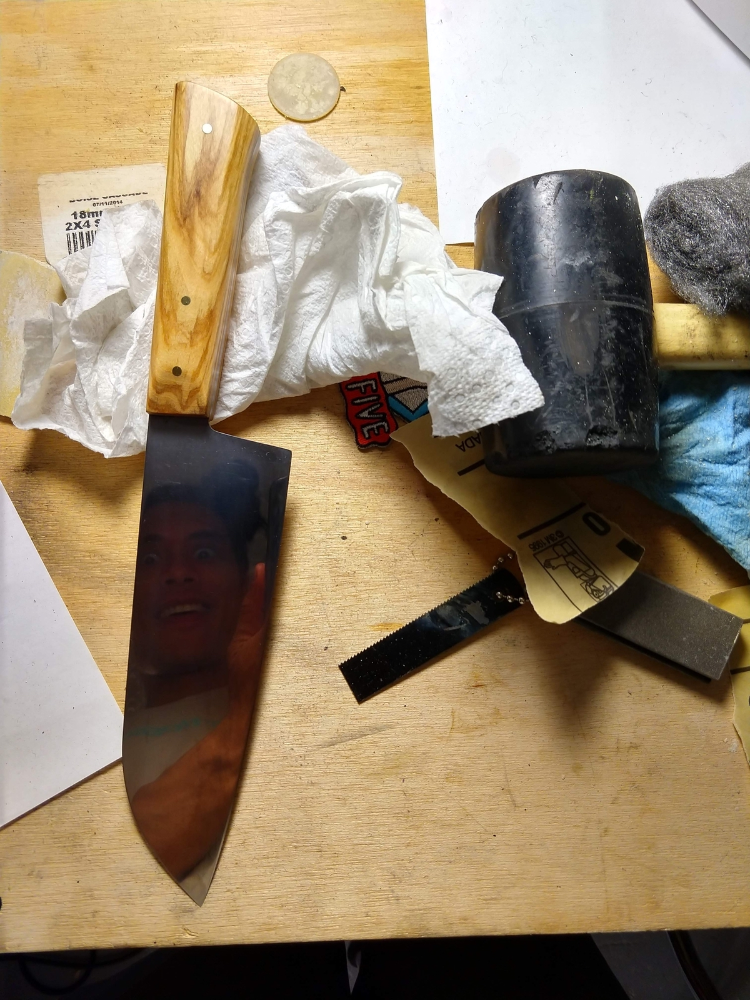
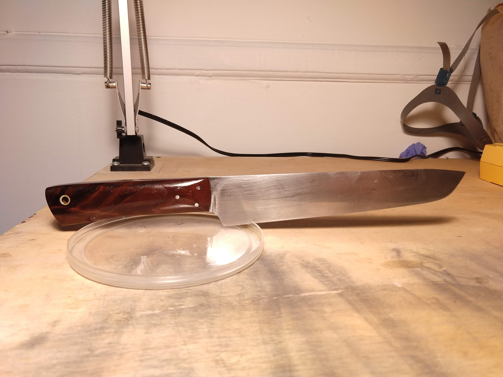
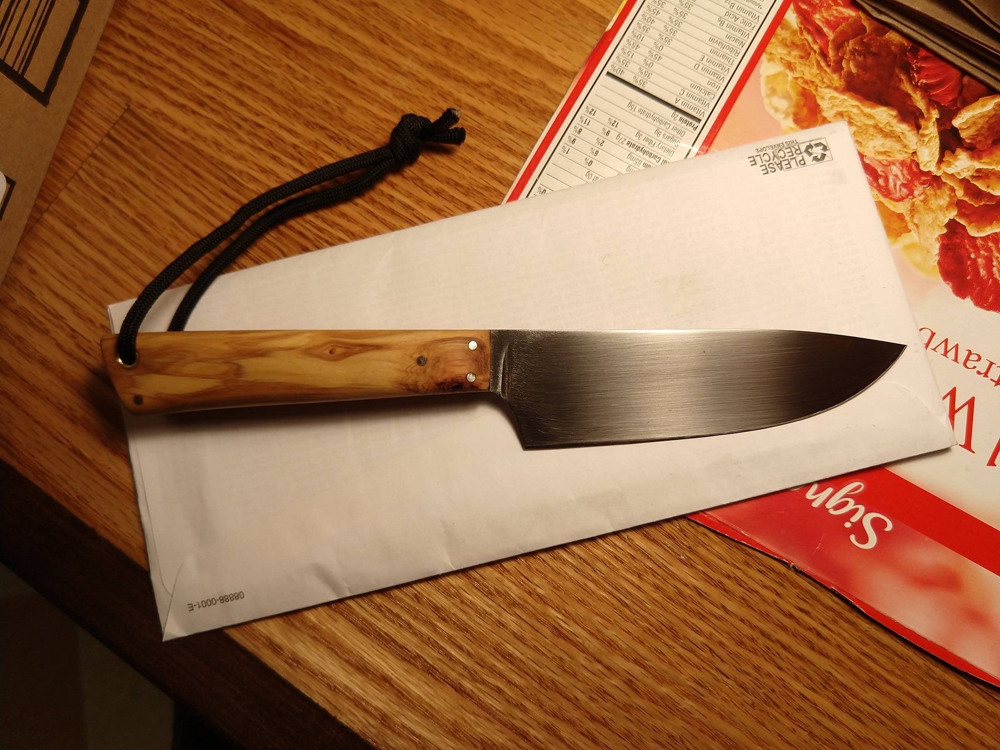
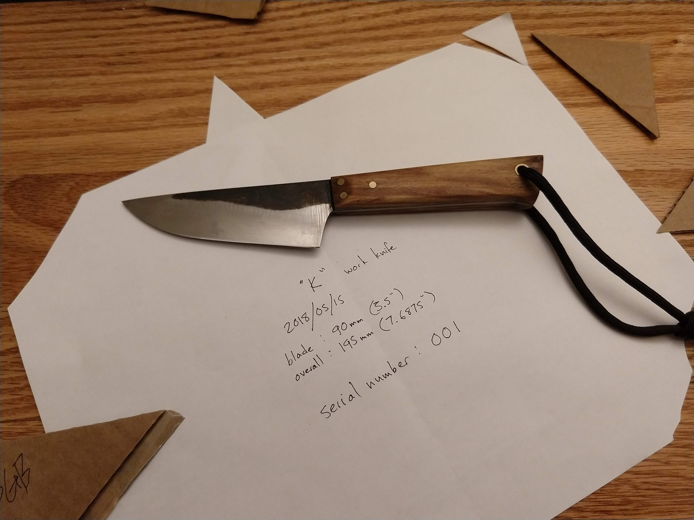
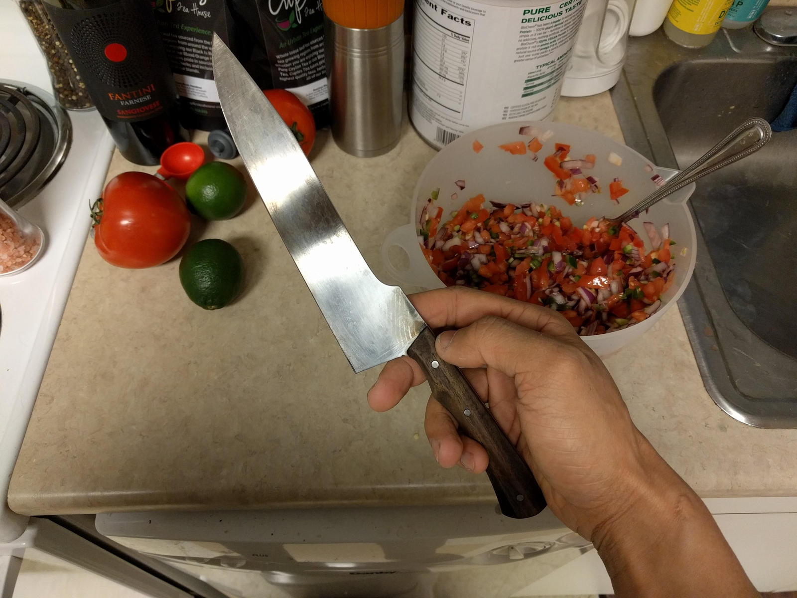

Knives For Sale, My Way, By Carlos
#0005 - Commission - Sold
Santoku, 165mm blade in 1095.
Sample Work
- Not for Sale
Gardening knife in 1095. I use this like a tiny sword to chop the heads off of weeds. (It's as fun as it sounds). More practically, I use it for pruning back thorny things when I go camping.
- Not for Sale
Hunting knife in 1084. I don't hunt, but my uncle does sometimes. This is a prototype of the knife I'll eventually give him.
#001 - Not for Sale
Work knife, "Model K", in 1095. By now it's seen a year or two chopping up boxes and who-knows-what-else in the back room of a local grocery store.
- Not for Sale
Chef/slicer hybrid in 1095. It's been well loved, by the time this picture was taken.
About Carlos
Since his father first showed him how to sharpen knives on a whetstone—over 8 years ago—Carlos has been practicing hand sharpening. In that time, Carlos's sharpening technique has been heavily influenced by Murray Carter of Carter Cutlery, and Vincent Kazuhito Lau, of Korin. Many thanks to both of them for sharing on youtube!
Carlos's first experience making knives was in 2016, in a chef's knife making class taught by John Shea at the Station North Tool Library. Carlos's buddy Chris knew well about Carlos's obsession with sharpening knives, and suggested they take the knife making class together.
The methods and techniques Carlos uses inherit heavily from those passed on by John in that class.
Since 2017 Carlos has been teaching students to make knives at the tool library, passing on the tradition and knowledge that John bestowed upon him.
About My Way
I strive to produce knives that are, above all else, delightful-to-use cutting tools. I strive to help students do the same.
The process I use for my knives is informed by my experience and desires as a teacher. For my students, I want the process to be accessible, but I want them to create knives that will cut the hell out of whatever they plan on cutting, and last a damn long time.
In the three years I've been helping people create knives of their own, I've refined the process I teach, which I inherited from John, to balance the performance, simplicity, and durability of the knives the students produce.
When I make knives, I combine the practicality and elegance of that process with the accumulated experience from 4 years of knifemaking and teaching.
(And watching youtube. (And reading a lot of posts about heat treating in the knifemaker's section on bladeforums.com. (And all the pages those posts link to. (And reading a lot of industrial literature about heat treating processes.))))
I specialize in blades made from high carbon steel (1095, or 1084). I buy steel for my blades from Aldo at New Jersey Steel Baron.
About this Website, Which Has Been Made My Way
I made this website:
- to inform you about the knives I make (some of which I may be selling, and which you may buy)
- as a joke about the internet, and the industry of making websites
- to make me, personally, laugh
- beside two sleeping dogs. One of them just farted and, as I write this to you, I am breathing in powerful fart smells.